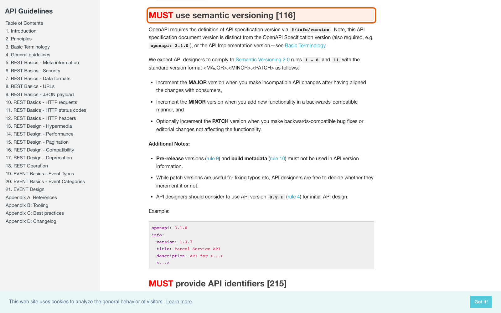
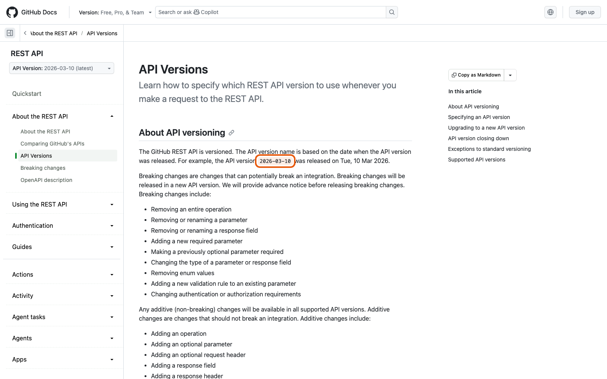
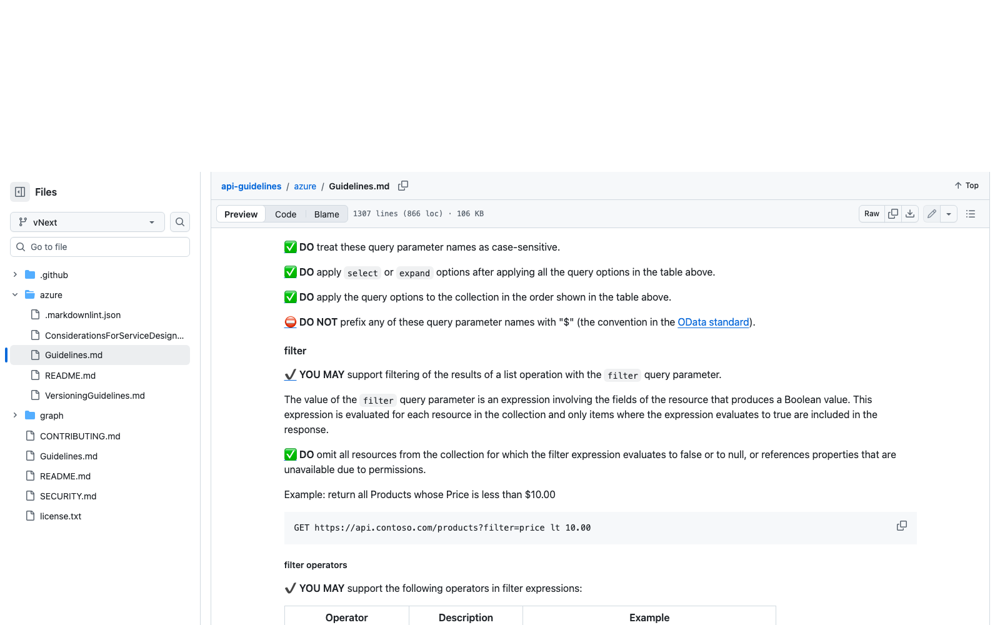

Справочник «Стандартизация HTTP API» · модуль 5 · Версии и изменения
Глава 5.1
Четыре номера
и SemVer
Фраза «у нас API версии 3.1» почти всегда означает путаницу: в одном сервисе живут четыре независимых номера, и они меняются по разным поводам. Разобравшись, какой за что отвечает, вы перестанете спорить вслепую и научитесь читать чужую политику версионирования.
«Версия — не украшение в документации, а обещание: что изменится молча, а что потребует от клиента работы.»
- Категория
- Версии
- Уровень
- Базовый
- Связанные главы
- 5.2 Breaking changes · 3.2 Разделы документа · 5.4 CHANGELOG и ADR
- Зачем это знать
- Чтобы номер версии что-то значил и для вас, и для клиента
§1Четыре номера в одном сервисе
Откройте учебный проект и найдите в нём всё, что похоже на версию. Их будет четыре, и все они разные.
| Номер | Где записан | Пример | Что означает |
|---|---|---|---|
| Версия формата описания | openapi в openapi/openapi.json | 3.1.0 | Каким форматом записан контракт; выбирает библиотека |
| Версия контракта | info.version в app/main.py | 1.1.0 | Состояние публичного контракта по SemVer |
| Мажорная версия в пути | Префикс маршрутов | /api/v1 | С какой несовместимой редакцией работает клиент |
| Версия развёртывания | Git | commit 4ab219… | Какой именно код сейчас запущен |
Они меняются независимо. Запись openapi: 3.1.0 не означает, что у API версия 3.1, а выкладка нового коммита не меняет контракт. Об этом прямо предупреждает свод правил Zalando:
Zalando RESTful API Guidelines, правило 116 «MUST use semantic versioning»правила компании
«Note, this API specification document version is distinct from the OpenAPI Specification version (also required, e.g. openapi: 3.1.0), or the API Implementation version»
Перевод. Учтите: версия документа спецификации API — это не то же самое, что версия OpenAPI Specification (её тоже нужно указать, например openapi: 3.1.0) и не версия реализации API.
Прежде чем спорить о номере, спросите: о каком из четырёх идёт речь. Половина разногласий заканчивается на этом вопросе.
§2Semantic Versioning для контракта
Для info.version в проекте принят Semantic Versioning — три числа через точку, у каждого свой повод измениться.
Semantic Versioning 2.0.0спецификация
«MAJOR version when you make incompatible API changes
MINOR version when you add functionality in a backward compatible manner
PATCH version when you make backward compatible bug fixes»
Перевод. MAJOR — при несовместимых изменениях API; MINOR — при добавлении возможностей с сохранением обратной совместимости; PATCH — при исправлении ошибок с сохранением обратной совместимости.
Главная польза — не в самих числах, а в том, что клиент по номеру понимает, нужно ли ему что-то делать. Переход с 1.1.0 на 1.2.0 он может пропустить; переход на 2.0.0 — не может.

§3Где указывать мажорную версию
Когда несовместимое изменение всё же нужно, старая и новая редакции какое-то время работают рядом. Значит, клиент должен уметь выбрать, с какой он разговаривает. Способов четыре, и все встречаются в жизни.
/api/v1/tickets. Видно в любом журнале, ссылке и адресной строке. Редакции легко развести по разным экземплярам сервиса.
X-GitHub-Api-Version: 2026-03-10. Адрес ресурса не меняется, но версия не видна в ссылке и её легко забыть.
?api-version=2024-05-01. Видно в ссылке, но параметр приходится добавлять к каждому запросу.
Accept: application/vnd.servicedesk.v1+json. Формально самый «правильный» по духу HTTP и самый неудобный на практике.
Правильного ответа нет — есть выбор с последствиями. Поэтому решение записывают отдельным документом, и в главе 5.4 мы разберём, как он устроен.
§4Четыре решения крупных компаний
| Кто | Где версия | Пример | Источник |
|---|---|---|---|
| GitHub | Заголовок, версия названа датой | X-GitHub-Api-Version: 2026-03-10 | GitHub Docs, API Versions |
| Microsoft Graph | Путь | graph.microsoft.com/v1.0/users, beta | GuidelinesGraph.md |
| Azure | Параметр запроса | ?api-version=2024-05-01 | Azure Guidelines.md |
| Box | В имени файла описания | openapi-v2025.0.json | box/box-openapi |
Обратите внимание на две вещи. Во-первых, даже внутри одной компании решения расходятся: Microsoft Graph ставит версию в путь, а Azure — в параметр запроса, и это документы одной организации. Во-вторых, GitHub и Box называют версии датами, а не номерами SemVer: для публичного API дата понятнее, чем «мажорная двойка».


api-version обязателен во всех запросах; правила даже задают текст сообщения, которое сервис возвращает, если параметр забыли.§5Решение учебного проекта
В проекте выбран путь: /api/v1. Решение и его причины записаны в файле docs/adr/0001-api-versioning.md — это не заметка на полях, а документ с обоснованием.
## Decision Мажорная версия указывается в пути: /api/v1. Версия контракта ведётся по Semantic Versioning в info.version. Совместимые изменения выпускаются без смены пути. ## Consequences - Версия видна в любом логе, ссылке и в адресной строке Swagger UI. - Старую и новую редакции можно направить на разные экземпляры сервиса правилом gateway. - Кэши и CDN различают редакции без настройки Vary. - Нельзя выпустить несовместимое изменение одной операции, не выпуская /api/v2 целиком.
Последний пункт — честно записанный минус выбранного способа, и это важнее всех плюсов. Решение без списка последствий выглядит убедительно ровно до того дня, когда последствие наступает.
§6Как номер меняется на практике
Посмотрим на настоящую историю учебного контракта: от 1.0.0 к 1.1.0.
### Added - Заголовок X-Request-Id в каждом ответе. - ETag в ответах с одним обращением, 304 на совпавший If-None-Match. - If-Match в PATCH, ответ 412 при устаревшей версии. - Idempotency-Key в POST: повтор с тем же ключом не создаёт второе обращение. - Лимит операций записи: 429 с Retry-After, заголовки X-RateLimit-*. ### Deprecated - GET /api/v1/tickets/open — используйте GET /api/v1/tickets?status=open.
- Все изменения — добавления. Новые заголовки, новые коды ответов в новых ситуациях. Ни одна существующая операция не изменила обещаний.
- Значит, это MINOR:
1.0.0 → 1.1.0. Путь остаётся/api/v1, клиентам ничего делать не нужно. - Устаревание — не удаление. Операция
GET /tickets/openпомечена устаревшей, но работает. Само по себе это совместимое изменение; несовместимым станет её удаление — и оно ждёт версии2.0.0.
Клиент, который ничего не знает о пометке, продолжает получать прежние ответы. Меняются только два заголовка, которые он вправе игнорировать. В этом весь смысл механизма: предупредить заранее, не ломая сегодня. Подробно — в главе 5.3.
§7Частые ошибки
openapi: 3.1.0 — про формат файла, а не про ваш сервис.§8Проверьте себя
- Назовите четыре номера учебного проекта и скажите, кто меняет каждый из них.
- Какая часть SemVer меняется при добавлении нового необязательного параметра? А при удалении поля ответа?
- Перечислите четыре места, куда можно поместить мажорную версию, и назовите по одному минусу каждого.
- Почему в одной компании — Microsoft — два API версионируются по-разному?
- Почему переход
1.0.0 → 1.1.0в учебном проекте не потребовал пути/api/v2, хотя добавилось семь новых возможностей? - Зачем в документе решения записывают отрицательные последствия выбора?
openapi: 3.1.0 — форматinfo.version — контракт/api/v1 — редакцияcommit — развёртываниеMAJOR — ломаетMINOR — добавляетPATCH — чинитпутьзаголовокпараметр запросаmedia type/api/v1 + SemVerADR 0001Справочник «Стандартизация HTTP API» · модуль 5 · глава 5.1Макаров Максим Николаевич